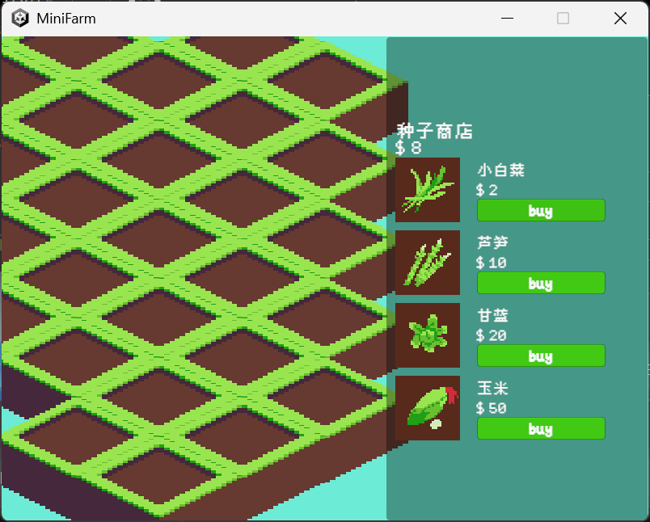
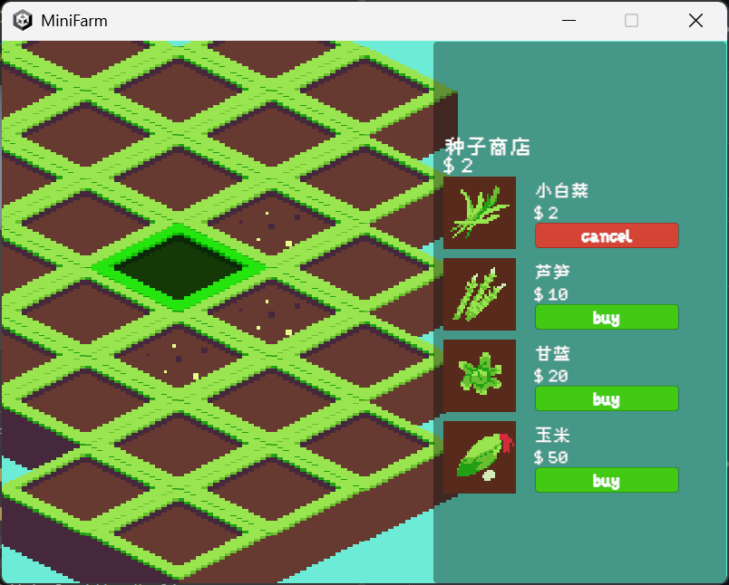
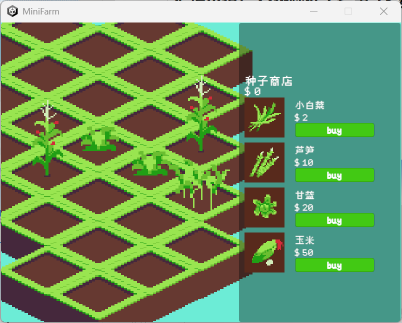
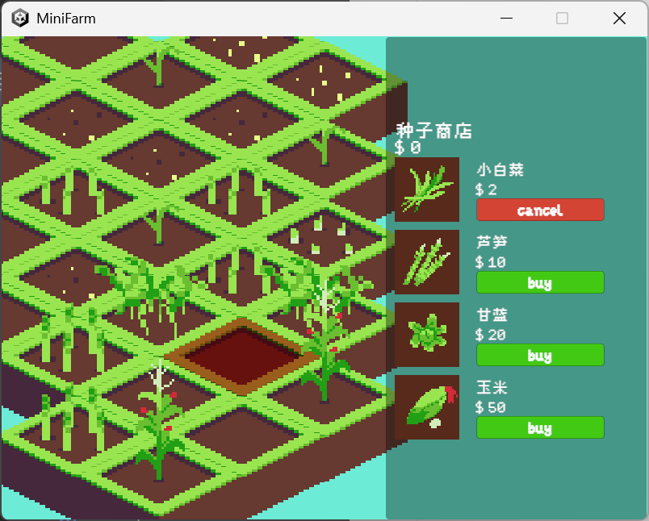

MiniFarm Unity农场模拟项目
相关资源
你可以点击以下链接查看和下载相关资源：
游戏安装包（Mini Farm.rar）项目源码可在GitHub仓库查看：
GitHub项目地址项目简介
这是一个基于Unity引擎开发的农场模拟游戏，旨在为玩家提供轻松愉快的农场经营体验。玩家可以在游戏中购买种子、种植作物、管理农场，并通过收获作物获取收益，逐步扩展自己的农场规模。
项目采用C#语言开发，利用Unity的图形渲染和物理系统，实现了直观的农场场景和流畅的交互体验。游戏包含种子商店系统、作物生长系统、库存管理系统等核心功能，适合休闲玩家体验农场经营的乐趣。
项目运行时的界面截图：
种子商店主界面 - 展示可购买的种子类型及价格（小白菜、芦笋、甘蓝、玉米）
购买操作界面 - 选择种子后显示价格确认选项（Buy/Cancel）
农场管理界面 - 显示已种植作物的生长状态和地块分布
资源统计界面 - 实时显示金币余额和作物生长进度
项目功能列表
主要功能：
- 种子商店系统：浏览不同作物种子（小白菜/$2、芦笋/$10、甘蓝/$20、玉米/$50）并执行购买操作
- 作物种植管理：在农场地块中种植种子，观察作物随时间生长的动态过程
- 资源经济系统：实时记录金币收支，通过收获作物获取收益
- 交互操作界面：支持购买确认/取消、地块选择、作物收割等一键式操作
- 状态可视化：3D场景渲染作物生长阶段，直观展示农场经营状态
技术特点：
- Unity引擎3D场景开发，使用物理系统模拟作物生长逻辑
- C#脚本实现状态机管理（商店状态/种植状态/收获状态）
- UI系统设计：使用UGUI实现交互式商店界面和数据统计面板
- 资源加载机制：动态加载作物模型和场景纹理资源
- 面向对象设计：将作物、商店、玩家数据抽象为独立类库
项目技术架构
| 模块 | 功能描述 | 关键脚本文件 |
|---|---|---|
| 商店模块 | 种子展示、价格计算、购买逻辑处理 | ShopSystem.cs、ItemData.cs |
| 种植模块 | 地块管理、作物生长周期控制 | PlantSystem.cs、GrowthTimer.cs |
| UI交互模块 | 界面渲染、按钮事件响应 | UIManager.cs、ButtonHandler.cs |
| 资源管理模块 | 金币统计、物品库存管理 | ResourceManager.cs、Inventory.cs |
| 场景控制模块 | 农场场景加载、相机控制 | SceneController.cs、CameraManager.cs |